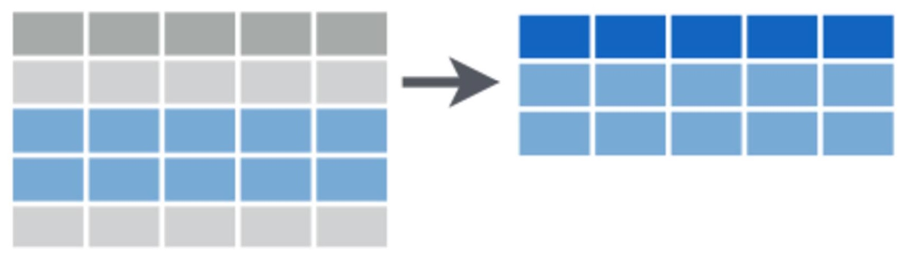
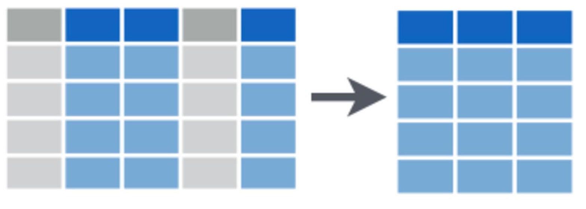

Bats <- read.csv(file = "Bats_data.csv", header = T, stringsAsFactors = F)Subconjuntos de datos
A menudo queremos subconjuntar nuestros datos, ya sea para examinar filas o columnas particulares de nuestro conjunto de datos, o para extraer observaciones con propiedades específicas. Podemos realizar subconjuntos en la etapa de exploración de datos para investigar si nuestra variable de respuesta difiere en su relación con una variable predictora específica entre categorías (por ejemplo, para buscar una interacción). También podemos querer extraer elementos de nuestro conjunto de datos para análisis separados.

En este ejercicio, cargaremos un conjunto de datos donde se muestrearon murciélagos en un bosque de regeneración en el sureste de Australia que ha sido adelgazado para reducir la densidad de árboles.
El conjunto de datos incluye mediciones del número total de llamadas de murciélagos (“Actividad”) y el número de llamadas de murciélagos que indican comportamiento de forrajeo (“Forrajeo”) registradas durante una noche en 47 sitios y un total de 173 noches de muestreo. Se han recopilado variables relacionadas con el adelgazamiento del bosque y se enumeran como columnas que terminan en “adelgazado”. Como el bosque estudiado estaba en una llanura de inundación, también se recopilaron covariables relacionadas con la disponibilidad de agua y se enumeran en columnas que terminan en “agua”.
Primero, descarga el conjunto de datos, Bats_data.csv, y cárgalo en R.
Fundamentos basicos para subconjuntos en R
Verifica la estructura después de haber cargado los datos con la función str.
Ahora que tenemos una idea del conjunto de datos con el que estamos trabajando, podemos usar los operadores [] y $ para seleccionar filas y columnas en un marco de datos. Es bastante simple: colocamos el nombre del marco de datos del cual queremos seleccionar antes de los corchetes y dentro de los corchetes colocamos una coma. Los números a la izquierda de la coma representan las filas que deseamos seleccionar y los números a la derecha de la coma representan las columnas que deseamos seleccionar.
Por ejemplo, si quisiéramos seleccionar solo datos de las primeras tres filas y todas las columnas, usaríamos:
Bats[1:3, ]Si quisiéramos solo las últimas cuatro columnas y todas las filas, usaríamos:
Bats[, 7:10]En combinación, esto seleccionaría datos solo de las primeras tres filas de las últimas cuatro columnas:
Bats[1:3, 7:10]Si los números de fila y columna que deseas no forman una secuencia, podemos usar la función >c() para concatenar índices de fila o columna. Por ejemplo, agreguemos la sexta fila y la segunda columna a nuestra selección anterior:
Bats[c(6, 1:3), c(2, 7:10)]En lugar de averiguar qué variable está en qué columna numerada, a menudo es más fácil usar los nombres de las variables en un marco de datos y seleccionar la variable usando el operador $. Por ejemplo, para elegir solo la variable “Site”:
Bats$SiteSubconjunto de filas en dplyr

El paquete dplyr tiene muchas funciones convenientes para el subconjunto de datos que pueden ser más intuitivas y rápidas para ti. Primero, instala y carga el paquete:
library(dplyr)Subconjunto por números de fila
Si conoces los números de fila en los que estás interesado en hacer el subconjunto, puedes seleccionar fácilmente estas filas usando corchetes como se discutió anteriormente o la función slice en dplyr.
Por ejemplo, para seleccionar solo las filas 10-12 en el marco de datos, usarías:
Bats.slice <- slice(Bats, 10:12)Seleccionar filas que cumplan ciertos criterios
Podemos hacer un subconjunto de estas filas usando la función filter. Por ejemplo, si solo queremos las filas donde se registró actividad de forrajeo, podríamos seleccionar las filas donde el recuento de llamadas de forrajeo es mayor que cero.
Bats.foraging <- filter(Bats, Foraging > 0)Puedes experimentar con una variedad de operadores lógicos al usar la función filter
< menor que
> mayor que
== igual a
<= menor o igual a
>= mayor o igual a
!= no igual a
in.NA= es NA
!is.na= no es NA
y más.
Puedes usar los comandos ?base::Logic y ?Comparison para obtener más información sobre estos operadores.
Notarás que al usar las funciones anteriores, principalmente las hemos asignado a nuevos objetos, por ejemplo, Bats.foraging <-.... Esto nos da la opción de usar los datos recién subconjuntados para cálculos adicionales.
Tomar una selección aleatoria de filas
Es posible que deseemos seleccionar aleatoriamente un número o fracción de filas en nuestro conjunto de datos para validar nuestros modelos. Por ejemplo, podríamos tomar el 50% de los datos para construir el modelo y luego el 50% del modelo para probarlo con datos observados. La selección aleatoria de filas es importante si vamos a dividir los datos de esta manera, porque no queremos sesgar nuestros datos hacia ninguna propiedad o categoría en particular. Aquí creamos un nuevo marco de datos “Bats.50p” que tiene la mitad del número de filas del conjunto de datos inicial:
Bats.50p <- sample_frac(Bats, size = 0.5, replace = FALSE)De manera similar, podríamos solicitar que se muestre un cierto número de filas seleccionadas al azar del conjunto de datos. Por ejemplo, para seleccionar al azar 100 filas, usaríamos:
Bats.100r <- sample_n(Bats, 100, replace = FALSE)Seleccionar filas con los valores más altos
dplyr tiene una función muy útil para seleccionar n filas con los valores más altos de cualquier columna dada: top_n. A continuación, identificamos las tres filas de datos que contienen la mayor actividad total de murciélagos por noche:
Bats.top <- top_n(Bats, 3, Activity)
print(Bats.top) Site Activity Foraging Date Treatment.thinned Area.thinned
1 CC04A1 802 9 7/01/2013 short-term 0
2 PC32A2 1070 66 7/01/2013 medium-term 0
3 PC32A2 944 52 8/01/2013 medium-term 0
Time.since.thinned Exclusion.thinned Distance.murray.water
1 0 11.932831 143.9868
2 8 7.150972 429.2099
3 8 7.150972 429.2099
Distance.creek.water
1 102.5009
2 694.7085
3 694.7085¡Wow, más de 1000 llamadas de murciélagos en una noche!
Eliminar filas duplicadas
Otra función útil es eliminar filas duplicadas, por ejemplo, si hemos ingresado datos dos veces por accidente.
Bats.distinct <- distinct(Bats)Podemos comparar el número de filas entre nuestro conjunto de datos original y nuestro nuevo conjunto de datos sin duplicados y nuestro conjunto de datos anterior utilizando <nrow:
nrow(Bats)[1] 173nrow(Bats.distinct)[1] 173En este caso, los dataframes son idénticos porque nuestros datos no tienen filas duplicadas.
Selección de columnas en dplyr

Como se mencionó anteriormente, puedes seleccionar una columna $ o una o más mediante indexación con []. dplyr tiene la función select que te permite seleccionar columnas por nombre o mediante el uso de funciones auxiliares útiles.
Seleccionar columnas por nombre
Por ejemplo, para seleccionar solo la columna “Site” del marco de datos, o tanto las columnas “Site” como “Date”:
Bats_subset1 <- select(Bats, Site)
Bats_subset2 <- select(Bats, Site, Date)Seleccionar varias columnas por su posición
Para seleccionar un grupo de columnas adyacentes entre sí, utiliza los nombres de la primera y última columna separados por :. Por ejemplo, esto selecciona todas las columnas entre “Site” y “Date”.
Bats_subset3 <- select(Bats, Site:Date)Seleccionar columnas por sus propiedades
Las funciones auxiliares incorporadas en select te permiten seleccionar columnas particulares según sus propiedades.
Por ejemplo, podríamos seleccionar las dos columnas (Distance.murray.water y Distance.creek.water) por el inicio de los nombres de columna o por el final de los nombres de columna:
Bats_subset4 <- select(Bats, starts_with("Distance"))
Bats_subset4 <- select(Bats, ends_with("water"))Si estás familiarizado con las expresiones regulares, puedes usar la función auxiliar match. Por ejemplo, para seleccionar esas mismas dos columnas, podríamos usar ^ para indicar que el nombre de la columna comienza con los siguientes caracteres y $ para indicar que el nombre de la columna termina con los caracteres precedentes.
Bats_subset4 <- select(bats, matches("^Distance"))
Bats_subset4 <- select(bats, matches("water$"))Podemos usar contains cuando queremos seleccionar columnas que contienen ciertos caracteres o palabras en su nombre.
Bats_subset4 <- select(Bats, contains("water"))La función auxiliar one_of seleccionará columnas que pertenezcan a una lista de nombres de columnas, recordando usar c() para concatenar la lista de nombres.
Bats_subset4 <- select(bats, one_of(c("Distance.murray.water", "Distance.creek.water")))Ten en cuenta que los últimos 6 usos de select hicieron exactamente lo mismo: extrajeron las dos columnas, Distance.murray.water y Distance.creek.water.
También puedes nombrar columnas específicas que deseas excluir de la selección usando un signo menos delante del nombre de la columna a excluir. Por ejemplo, para crear un marco de datos que ya no tenga la variable Foraging:
Bats_subset5 <- select(Bats, -Foragaing)Por último, si tienes columnas numeradas, podemos usar la función auxiliar numrange para seleccionar columnas específicas. Por ejemplo, este código seleccionaría las columnas llamadas var1, var2 y var3.
select(data, num_range("var", 1:3))Ayuda adicional
Este tutorial se basó en la excelente hoja de referencia para el manejo de datos con dplyr y tidyr producida por Rstudio. Las imágenes se obtuvieron del mismo documento.
Puedes escribir ?dplyr para obtener ayuda con este paquete.
Autor: Rachel V. Blakey
Año: 2016
Última actualización: Nov. 2023